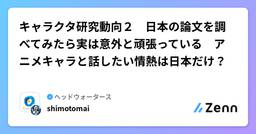
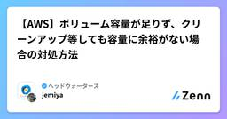
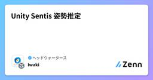
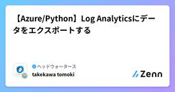
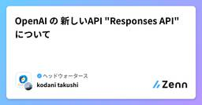

ヘッドウォータースのフィード
https://zenn.dev/p/headwaters
株式会社ヘッドウォータースのテックブログです。 生成AI、LLM、Azureのサービスや資格、IoT、XR系などData&AIとApp modernizeに関して幅広く投稿します！
フィード

キャラクタ研究動向２ 日本の論文を調べてみたら実は意外と頑張っている アニメキャラと話したい情熱は日本だけ？
ヘッドウォータースのフィード
はじめに大規模言語モデルが発明されファインチューニングやRAGの技術も進み、物語のキャラクターとの会話を楽しみたいというニーズにもこたえられるようになりました。実際様々なチャットアプリやサービスがありますが、今回は研究としてどのようなものがあるのか調べてみたので、ブログとしてまとめます。前回は英語論文を取り上げました。https://zenn.dev/headwaters/articles/e32c4369f9cb87人工知能学会などキャラクターについての研究は昔からあります。今回はその中から最近のLLMに関連したキャラクタ研究論文や学会発表を紹介します。参考文献：角...
1日前

【AWS】ボリューム容量が足りず、クリーンアップ等しても容量に余裕がない場合の対処方法
ヘッドウォータースのフィード
環境AWSEC2（サーバー。Linux環境）EBS（ボリューム） 事象EC2でサーバー運用をしていたが、ボリューム（ディスク）容量の使用率が100%を達成して、500エラーの発生。（Webブラウザ上で500エラーの表示です） 上手くいかなかった取った対策クリーンアップ（Linux環境での手順は様々な記事にありますので、割愛します）クリーンアップしたものの1MBしか容量は空かず、500エラーは解消されませんでした。EBSの領域拡張をしたが、Qiitaなどの多くの記事の通りでは全然ボリューム（ディスク）容量が空きませんでした。"df -h"のディスク...
3日前

Unity Sentis 姿勢推定
ヘッドウォータースのフィード
Unity Sentisを利用した姿勢推定 1. 概要Unity Sentisは、UnityでML（機械学習）モデルを推論できるツールです。これを利用して、人体の姿勢推定（Pose Estimation）を行うには、以下のようなステップが必要になります。姿勢推定モデルの準備OpenPose、MediaPipe Pose、HRNet などのモデルを利用ONNX形式のモデルを準備Unity SentisでモデルをロードONNXモデルをUnityにインポートSentisのAPIを利用して推論を実行カメラ入力の取得WebカメラやVRデバイスのカ...
3日前

【Azure/Python】Log Analyticsにデータをエクスポートする
ヘッドウォータースのフィード
執筆日2025/3/17 やることAzureの診断設定でLog AnalyticsにExportした結果をLocalにcsvで保存する 前提以下の手順でサービスプリンシパルの作成/シークレット値の取得が完了していることhttps://zenn.dev/headwaters/articles/e82aca7bec3579 手順以下のライブラリーをinstallするpip install azure-identity azure-monitor-query pandas以下を実行するfrom azure.identity import Client...
5日前

OpenAI の 新しいAPI "Responses API" について
ヘッドウォータースのフィード
執筆日2025/03/15 概要今週火曜日(2025/03/11)にOpenAIから、新しいAPIの発表がありました。既存のChat APIによるシンプルな会話と、エージェント構築のためのAssistants APIの機能を統合してより使いやすく進化させたResponses APIです。先日GPT-4.5が発表されたところでしたがそちらは高級モデルで、API利用してシステム構築目的に使うには少し……という感じでした。一方こちらは、同日に発表されたAgent SDKと合わせて最近のLLMのエージェント化の潮流に乗っていてシステム開発を更に便利にするのに重要な新機能であると感じま...
7日前

【MS Fabric】増分蓄積で詰まったとこ
ヘッドウォータースのフィード
はじめにMicrosoft Fabricを活用してレイクハウスに増分蓄積の処理を作成していました。Dataflow Gen2で増分蓄積で取り込めるにしようかとしていました。https://learn.microsoft.com/ja-jp/fabric/data-factory/tutorial-setup-incremental-refresh-with-dataflows-gen2 エラーが...!excel_WriteToDataDestination: データフローの更新で問題が発生しました: 'Couldn't refresh the entity becau...
12日前
Azure FunctionsからマネージドID認証でBlobへ疎通をする
ヘッドウォータースのフィード
執筆日2025/3/10 やりたいことAzure FunctionsからマネージドID認証でBlobへ疎通を行いたい。構成は以下。 前提構成図通りにAzure環境が準備されていること 手順Azure FunctionsにBlob共同作成者,AcrPullを付与するAzure Blob Storageのコンテナを作成し、適当にファイルをUploadする以下を参考にDockerベースのFunctionsをLocalで構築するhttps://zenn.dev/headwaters/articles/746a73656cfbbefunctions_a...
12日前
Phi-4-miniを使って完全オフラインなAIチャットアプリを作成
ヘッドウォータースのフィード
※iPad Proで画面録画→Macに転送して横長になるようにスクショを撮ってます。 ソースコード以下にアップしてます。https://github.com/IkeuchiRyuto/LocalGenAIApp UIChatUI用のライブラリなどありますが、カスタマイズ性を考えて自分で作ってます。まだテキストしか対応してないので今後マルチモーダル化していきます。https://github.com/IkeuchiRyuto/LocalGenAIApp/blob/main/LocalGenAIApp/Screens/LocalAIChatScreenView.swift...
13日前
Hugging Faceにデータセットをアップロードする方法
ヘッドウォータースのフィード
前提Hugging Faceのアカウント登録しましょう! 方法まずは以下にアクセスhttps://huggingface.co/new-dataset 1. リポジトリ作成個人アカウントに作成する場合は右上のアカウントアイコンから以下を選択組織アカウントに作成する場合は、組織アカウントの画面にアクセスして以下を選択データセット名を適当に入力して、ライセンスはUnknownを選択します。一般公開したくないのでPrivateにします。 2. アップロード作成されたリポジトリの「Files and Versions」→「Add file」→「Uplo...
13日前
マルチスレッドとマルチプロセスについて再度おさらい
ヘッドウォータースのフィード
しょっちゅうどっちがどっちか忘れるので自分も記事にしました。すでに弊社メンバーも記事書いてくれてます。サンタさんでそれぞれの違いを説明してくれてるのでめちゃくちゃ分かりやすいと思います。https://zenn.dev/headwaters/articles/c0e54e9ccf55ee 結論複数外部サービスと連携をしながら1連の処理をするAPIがあるとして...マルチプロセス...API自体を複数同時に実行させたい時に活用使う時：・複数ユーザーが同時にリクエストが来る時・レスポンスを返すまでに時間がかかる時・(複数アクセスが来るけど)APIのレスポンスを改善したい...
14日前
GraphRAG情報のまとめ 最新の文献と記事をまとめておいてあげたんだから．．．か、勘違いしないでよね．．．
ヘッドウォータースのフィード
「GraphRAGの文献と記事をまとめたのでツンデレ風タイトルにしてください」でできたタイトルです。最近注目されているGraphRAGを扱う機会があったので、調べてみました。べ、別に皆さんのためにとかじゃないんですから！タイトルはふざけていますが、内容は真面目です。実際、多くの人が注目して使い始めているのでブログもたくさんあります。ちょっと前のコードが動かなかったり、いろいろ苦労しました。主に、LangChainとneo4jの組み合わせや、microsoftのgraphragライブラリの記事が見られます。 実装的な情報アルゴリズム理解（英語）GraphRAG wit...
15日前
【Azure AI Speech】- .wavの音声ファイルの作成方法について
ヘッドウォータースのフィード
執筆日2025/3/4 やることAzure AI Speechを使って、.wav形式のファイルとして保存する。 前提Azure AI Speechをデプロイ済みであること。Azure AI Speechのキーとリージョンを取得していること。 ライブラリーのインストールpip install azure-cognitiveservices-speech コードimport azure.cognitiveservices.speech as speechsdkspeech_key = <"Azure Speechキー">service_r...
18日前
Phi-4 multimodal を VRAM12GB に載せる
ヘッドウォータースのフィード
WhyPhi-4 multimodalのsample codeをそのまま動作させると、VRAM12GBに収まりません。細かく見ていませんが、16GBあればそのまま動作させられそうです。手元のRTX4080 Laptop 12GBで動作させたいのでどうにかします。 What前提画像とテキストのモーダルだけ使うPython Debbugerでモデルの中を触りたいので、なるべく純正仕様が良い(この前提がなければ、ONNX量子化版を触る方が早そう)その前提で以下を実施します。Audio encoder / projector の削除 (使うやつだけ残す)↑に伴う...
21日前
Agentic World Vision
ヘッドウォータースのフィード
Agentic World実現に向けてクラウド上のLLMを活用したAgentic Workflowの利用が急速に拡大しています。企業や自治体、さまざまな業界でAzureOpenAI、Geminiなど高度なAIエージェントを活用し、業務効率化や意思決定の自動化を進める事例が増えています。例えば、コールセンターではAgentic Workflowにより一般的な問い合わせ対応を自動化、チャットボットによる常時サポート/自動化が進んでいます。マーケティングではユーザーごとに内容が変化する動的広告を配信するためにAI Agentが使われたり、ECサイトの商品紹介文作成、新商品のアイデア...
22日前
プロンプトエンジニアリング - ReActに関して
ヘッドウォータースのフィード
背景LLMマルチエージェントを使ったQAシステムのエージェント設計において、しばしば以下の課題が浮上します。ユーザーとエージェントの会話の履歴を参考にせず、ユーザーの単発の質問に対して回答してしまう決め打ちのルールやフローに基づいて回答を行わせるため、急に話題が変わった質問や想定外の質問に弱い計算を間違えるハルシネーション（それっぽい嘘）が発生するユーザーからの不明瞭、もしくは抽象的な質問に対して、自身で何の情報が足りないか補えないこれらをどうにか解消できないか調べた結果、「ReAct」という手法にたどり着きました。 ReActとは2022年に発表された論文「...
22日前
【Azure】異なるリージョン間でのAppServiceとAzure Database for MySQLの接続が失敗する場合の対処方法
ヘッドウォータースのフィード
概要2025年2月現在、東日本リージョンのAppServicePlanが枯渇していることがあり、AppServicePlanを西日本リージョンにデプロイし、Azure Database for MySQLは東日本リージョンでデプロイしている状況です。その際に仮想ネットワーク統合、仮想ネットワークのピアリング、NSGやサブネットの設定に誤りがないにもかかわらず、AppServiceからAzure Database for MySQLへのPython処理が失敗している事象がありました。 構成 確認したこと特に西日本リージョンでデプロイしたAppServicePlanの仮想...
22日前
Azure OpenAI の Function Calling で並列関数呼び出しが出来るようになっていた
ヘッドウォータースのフィード
執筆日2025/02/28 概要以前、Function Callingについての記事を書いていましたがこの時は並列関数呼び出しに対応しておらず、一度のリクエスト実行で一つの関数しか実行してくれませんでした（一つの関数を複数回呼び出しは出来た）。が、いつの間にか対応して出来るようになっていました。API的には2023年12月には出来たよとMS Learnに書いてあるけど……？https://zenn.dev/headwaters/articles/13316d641c9555 使用方法AzureOpenAIのクライアントのchat.completions.createメ...
22日前
Azure Webアプリ に Streamlitアプリ を最速でデプロイする
ヘッドウォータースのフィード
概要Streamlitで作ったアプリのWebアプリデプロイが思ってたより簡単で感動したので共有します。 前提Azure SubscriptionがあるVSCodeがあり、拡張機能でAzureにログインしている 手順Azure portalでWebアプリのリソースを作成[1]（コードはpythonを選択）VSCodeの拡張機能でアプリデプロイ※ Azure App Service拡張機能をインストールしていない場合はインストールする下記サンプルコード類を参考にプロジェクトディレクトリにファイル2つを用意。AzureのWebアプリのアイコン → Deploy...
22日前
【学習ログ】スクレイピングの始め方
ヘッドウォータースのフィード
スクレイピングの基本スクレイピングとは、プログラムを使ってWebサイトのデータを自動的に取得し、加工・分析する技術のことです。そのため、スクレイピングを使えば、以下のようなことができます。ニュースサイトから最新の見出しを取得ECサイトから商品の価格を取得して比較SNSや旅行サイトなどの投稿を集めてトレンド分析 スクレイピングのルールと注意点スクレイピングは便利ですが、ルールを守らないと法的リスクやアクセス制限を受けることがあります。robots.txtを確認する・Webサイトには「robots.txt」というファイルがあり、スクレイピングを許可・禁止するルール...
22日前
非力なPCでAWSIM上の車をマニュアルで走らせる試み
ヘッドウォータースのフィード
前提この記事ではAWSIMを動かして手動で車を運転するところまでのセットアップはしますが、自動運転(Autoware)やROSについての話は出ません。また、非力なPCとはdGPU/eGPUを使わずiGPUのみのPCを指しています。 今回使ったPCのスペックOS: Windows11 Enterprise(24H2)CPU:Intel Core Ultla7 155U@1.70GHzRAM:32GB@LPDDR5-6400GPU:Intel GraphicsIntel Iris Xe 4 Core Graphics 64 EUsユニット数:64シェーダー数:5...
22日前